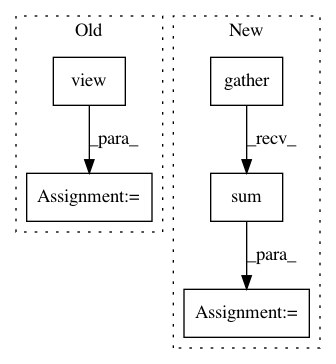

e73fddf45377e8a3c0ea2e8281fae18f7b498dd6,fairseq/criterions/label_smoothed_cross_entropy.py,LabelSmoothedCrossEntropyCriterion,forward,#LabelSmoothedCrossEntropyCriterion#Any#Any#Any#,66
Before Change
net_output = model(**sample["net_input"])
lprobs = model.get_normalized_probs(net_output, log_probs=True)
lprobs = lprobs.view(-1, lprobs.size(-1))
target = sample["target"].view(-1)
loss = LabelSmoothedNLLLoss.apply(lprobs, target, self.eps, self.padding_idx, None, reduce)
nll_loss = F.nll_loss(lprobs, target, size_average=False, ignore_index=self.padding_idx, reduce=reduce)
sample_size = sample["target"].size(0) if self.args.sentence_avg else sample["ntokens"]
After Change
lprobs = model.get_normalized_probs(net_output, log_probs=True)
target = sample["target"].unsqueeze(-1)
non_pad_mask = target.ne(self.padding_idx)
nll_loss = -lprobs.gather(dim=-1, index=target)[non_pad_mask]
smooth_loss = -lprobs.sum(dim=-1, keepdim=True)[non_pad_mask]
if reduce:
nll_loss = nll_loss.sum()
smooth_loss = smooth_loss.sum()
eps_i = self.eps / lprobs.size(-1)
loss = (1. - self.eps) * nll_loss + eps_i * smooth_loss
In pattern: SUPERPATTERN
Frequency: 3
Non-data size: 5
Instances
Project Name: elbayadm/attn2d
Commit Name: e73fddf45377e8a3c0ea2e8281fae18f7b498dd6
Time: 2018-03-05
Author: myleott@fb.com
File Name: fairseq/criterions/label_smoothed_cross_entropy.py
Class Name: LabelSmoothedCrossEntropyCriterion
Method Name: forward
Project Name: pcyin/tranX
Commit Name: 65c51a90b9034c934e4f91d6fe35d6a28c3b2f7e
Time: 2018-10-28
Author: pcyin@cs.cmu.edu
File Name: model/seq2seq.py
Class Name: Seq2SeqModel
Method Name: score_decoding_results